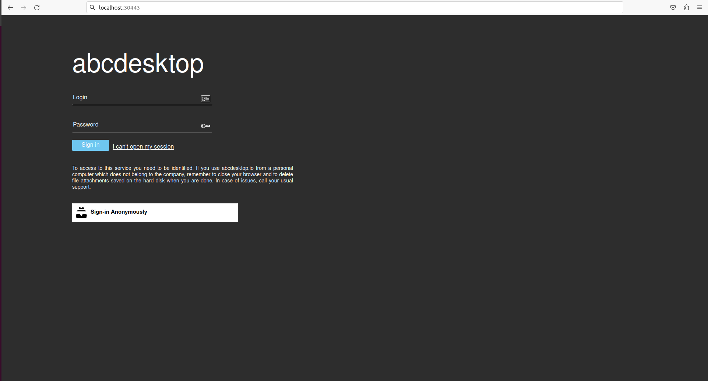
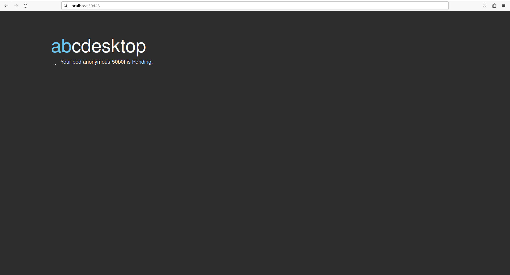
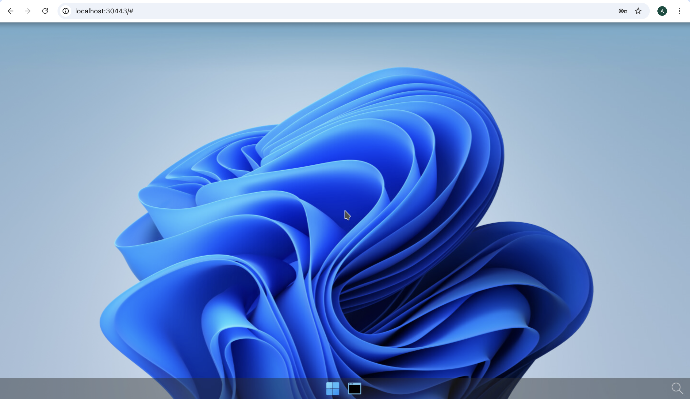

abcdesktop installation
Requirements
- kubernetes cluster
READYto run kubectlorminikubecommand-line tool must be configured to communicate with your cluster.opensslandcurlcommand line must be installed too (only for install using kubectl).
You can run the Quick installation process or choose the Manually installation step by step
Linux operating system is recommanded to run abcdesktop.io.
Quick installation (Microsoft Windows)
If you are using a Microsoft Windows operating system please follow the dedicated link below
Quick install for windows
Quick installation (Linux or macOS)
Quick installation can be run on Linux or macOS operation system, using
kubectlcommand
Install using kubectl on Linux or macOS operation system
Download and extract the latest release automatically
curl -sL https://raw.githubusercontent.com/abcdesktopio/conf/main/kubernetes/install-4.1.sh | bash
Install using helm on Linux or macOS operation system
Quick installation can be run using helm (version > 3)
helm repo add abcdesktop https://abcdesktopio.github.io/helm/
helm repo update abcdesktop
helm install my-abcdesktop abcdesktop/abcdesktop --version 4.1.2 --create-namespace -n abcdesktop
% helm repo add abcdesktop https://abcdesktopio.github.io/helm/
"abcdesktop" has been added to your repositories
% helm repo update abcdesktop
Hang tight while we grab the latest from your chart repositories...
...Successfully got an update from the "abcdesktop" chart repository
Update Complete. ⎈Happy Helming!⎈
% helm install my-abcdesktop abcdesktop/abcdesktop --version 4.1.2 --create-namespace -n abcdesktop
NAME: my-abcdesktop
LAST DEPLOYED: Sat Jun 21 12:32:09 2025
NAMESPACE: abcdesktop
STATUS: deployed
REVISION: 1
TEST SUITE: None
To get more details about the helm installation process and options, please read the documentation on helm repository
When install your helm installation process is ready, you need to forward the pod's router tcp port 80 to your localhost port 30443 (for example)
LOCAL_PORT=30443
NAMESPACE=abcdesktop
kubectl port-forward $(kubectl get pods -l run=router-od -o jsonpath={.items..metadata.name} -n ${NAMESPACE} ) --address 0.0.0.0 "${LOCAL_PORT}:80" -n ${NAMESPACE}
installation with kubectl
Download and extract the latest release automatically
curl -sL https://raw.githubusercontent.com/abcdesktopio/conf/main/kubernetes/install-4.1.sh | bash
You can read on stdout
[INFO] abcdesktop install script namespace=abcdesktop
[OK] kubectl version
[OK] openssl version
[OK] kubectl create namespace abcdesktop
writing RSA key
writing RSA key
[OK] abcdesktop_jwt_desktop_payload keys created
writing RSA key
[OK] abcdesktop_jwt_desktop_signing keys create
writing RSA key
[OK] abcdesktop_jwt_user_signing keys create
[OK] create secret generic abcdesktopjwtdesktoppayload
[OK] create secret generic abcdesktopjwtdesktopsigning
[OK] create secret generic abcdesktopjwtusersigning
[OK] label secret abcdesktopjwtdesktoppayload
[OK] label secret abcdesktopjwtdesktopsigning
[OK] label secret abcdesktopjwtusersigning
[OK] downloaded source https://raw.githubusercontent.com/abcdesktopio/conf/main/kubernetes/abcdesktop-4.1.yaml
[OK] downloaded source https://raw.githubusercontent.com/abcdesktopio/conf/main/reference/od.config.4.1
[OK] kubectl create configmap abcdesktop-config --from-file=od.config -n abcdesktop
[OK] label configmap abcdesktop-config abcdesktop/role=pyos.config
role.rbac.authorization.k8s.io/pyos-role created
rolebinding.rbac.authorization.k8s.io/pyos-rbac created
serviceaccount/pyos-serviceaccount created
configmap/configmap-mongodb-scripts created
secret/secret-mongodb created
deployment.apps/mongodb-od created
deployment.apps/memcached-od created
deployment.apps/router-od created
deployment.apps/nginx-od created
deployment.apps/speedtest-od created
deployment.apps/pyos-od created
deployment.apps/console-od created
deployment.apps/openldap-od created
endpoints/desktop created
service/desktop created
service/memcached created
service/mongodb created
service/speedtest created
service/pyos created
service/console created
service/http-router created
service/website created
service/openldap created
[INFO] waiting for deployment/console-od available
[OK] deployment.apps/console-od condition met
[INFO] waiting for deployment/memcached-od available
[OK] deployment.apps/memcached-od condition met
[INFO] waiting for deployment/mongodb-od available
[OK] deployment.apps/mongodb-od condition met
[INFO] waiting for deployment/nginx-od available
[OK] deployment.apps/nginx-od condition met
[INFO] waiting for deployment/openldap-od available
[OK] deployment.apps/openldap-od condition met
[INFO] waiting for deployment/pyos-od available
[OK] deployment.apps/pyos-od condition met
[INFO] waiting for deployment/router-od available
[OK] deployment.apps/router-od condition met
[INFO] waiting for deployment/speedtest-od available
[OK] deployment.apps/speedtest-od condition met
[INFO] list all pods in namespace abcdesktop
NAME READY STATUS RESTARTS AGE
console-od-844c749f85-vbbb7 1/1 Running 0 32s
memcached-od-d4b6b6867-tbfgf 1/1 Running 0 33s
mongodb-od-5d996fd57b-tcn45 1/1 Running 0 33s
nginx-od-796c7d7d6b-lgnjb 1/1 Running 0 33s
openldap-od-567dcf7bf6-h2nq9 1/1 Running 0 32s
pyos-od-8d4988b56-vcd7z 1/1 Running 0 32s
router-od-f5458658-b52hj 1/1 Running 0 33s
speedtest-od-7fcc9649b4-qllr7 1/1 Running 0 32s
[INFO] Setup done
[INFO] Checking the service url on http://localhost:30443
[INFO] service status is down
[INFO] Looking for a free TCP port from 30443
[OK] Get a free TCP port from 30443
[INFO] If you're using a cloud provider
[INFO] Forwarding abcdesktop service for you on port=30443
[INFO] For you setup is running the command 'kubectl port-forward nginx-od-796c7d7d6b-lgnjb --address 0.0.0.0 30443:80 -n abcdesktop'
[OK] Port-Forward successful
[OK] Please open your web browser and connect to
[INFO] http://localhost:30443/
The command above downloads the latest release (numerically) of abcdesktop.io. The quick installation process runs the commands step by step :
- create the
abcdesktopnamespace - build all
rsakeys for jwt signing and payload encryption, using openssl command line - create all
service account,services,deployments,secretsandconfigmapsfrom the abcdesktop.yaml - download and create the default configuration file od.config
This install process doesn't install applications for your desktop, you get a desktop with few applications in your dock
Change the default namespace
You may need to replace the default namespace abcdesktop by your own during the install process. The install-4.1.sh bash script allow you to set the new namespace as an option.
wget https://raw.githubusercontent.com/abcdesktopio/conf/main/kubernetes/install-4.1.sh
chmod 755 install-4.1.sh
Run install-4.1.sh
./install-4.1.sh --namespace superdesktop
[INFO] abcdesktop install script namespace=superdesktop
[OK] kubectl version
[OK] openssl version
[OK] kubectl create namespace superdesktop
[OK] create secret generic abcdesktopjwtdesktoppayload
[OK] create secret generic abcdesktopjwtdesktopsigning
[OK] create secret generic abcdesktopjwtusersigning
[OK] label secret abcdesktopjwtdesktoppayload
[OK] label secret abcdesktopjwtdesktopsigning
[OK] label secret abcdesktopjwtusersigning
[OK] use local file abcdesktop.yaml
[OK] use local file od.config
[OK] updated abcdesktop.yaml file with new namespace superdesktop
[OK] updated abcdesktop.yaml file with new fqdn superdesktop.svc.cluster.local
[OK] updated od.config file with new namespace superdesktop
[OK] updated od.config file with new fqdn superdesktop.svc.cluster.local
[OK] kubectl create configmap abcdesktop-config --from-file=od.config -n superdesktop
[OK] label configmap abcdesktop-config abcdesktop/role=pyos.config
[OK] default account is created
[OK] role.rbac.authorization.k8s.io/pyos-role created
rolebinding.rbac.authorization.k8s.io/pyos-rbac created
serviceaccount/pyos-serviceaccount created
configmap/configmap-mongodb-scripts created
secret/secret-mongodb created
deployment.apps/mongodb-od created
deployment.apps/memcached-od created
deployment.apps/router-od created
deployment.apps/nginx-od created
deployment.apps/speedtest-od created
deployment.apps/pyos-od created
deployment.apps/console-od created
deployment.apps/openldap-od created
endpoints/desktop created
service/desktop created
service/memcached created
service/mongodb created
service/speedtest created
service/pyos created
service/console created
service/http-router created
service/website created
service/openldap created
[OK] pyos-serviceaccount account is created
[INFO] waiting for deployment/console-od available
[OK] deployment.apps/console-od condition met
[INFO] waiting for deployment/memcached-od available
[OK] deployment.apps/memcached-od condition met
[INFO] waiting for deployment/mongodb-od available
[OK] deployment.apps/mongodb-od condition met
[INFO] waiting for deployment/nginx-od available
[OK] deployment.apps/nginx-od condition met
[INFO] waiting for deployment/openldap-od available
[OK] deployment.apps/openldap-od condition met
[INFO] waiting for deployment/pyos-od available
[OK] deployment.apps/pyos-od condition met
[INFO] waiting for deployment/router-od available
[OK] deployment.apps/router-od condition met
[INFO] waiting for deployment/speedtest-od available
[OK] deployment.apps/speedtest-od condition met
[INFO] waiting for pod/console-od-79bf9bf475-gbb62 Ready
[OK] pod/console-od-79bf9bf475-gbb62 condition met
[INFO] waiting for pod/memcached-od-d4b6b6867-c8b4p Ready
[OK] pod/memcached-od-d4b6b6867-c8b4p condition met
[INFO] waiting for pod/mongodb-od-5d996fd57b-z2pjl Ready
[OK] pod/mongodb-od-5d996fd57b-z2pjl condition met
[INFO] waiting for pod/nginx-od-57dccb8cf9-txgzc Ready
[OK] pod/nginx-od-57dccb8cf9-txgzc condition met
[INFO] waiting for pod/openldap-od-6955699d5-qhjzr Ready
[OK] pod/openldap-od-6955699d5-qhjzr condition met
[INFO] waiting for pod/pyos-od-777747f64b-r87x5 Ready
[OK] pod/pyos-od-777747f64b-r87x5 condition met
[INFO] waiting for pod/router-od-59d67d664f-f56m8 Ready
[OK] pod/router-od-59d67d664f-f56m8 condition met
[INFO] waiting for pod/speedtest-od-67db77f86f-wqkb7 Ready
[OK] pod/speedtest-od-67db77f86f-wqkb7 condition met
[INFO] list all pods in namespace superdesktop
NAME READY STATUS RESTARTS AGE
console-od-79bf9bf475-gbb62 1/1 Running 0 12s
memcached-od-d4b6b6867-c8b4p 1/1 Running 0 13s
mongodb-od-5d996fd57b-z2pjl 1/1 Running 0 13s
nginx-od-57dccb8cf9-txgzc 1/1 Running 0 13s
openldap-od-6955699d5-qhjzr 1/1 Running 0 12s
pyos-od-777747f64b-r87x5 1/1 Running 0 13s
router-od-59d67d664f-f56m8 1/1 Running 0 13s
speedtest-od-67db77f86f-wqkb7 1/1 Running 0 13s
[INFO] Setup done
[INFO] Checking the service url on http://localhost:30443
[OK] Please open your web browser and connect to http://localhost:30443/
Requirements for minikube
To fix this issue
FailedScheduling 0/1 nodes are available: 1 Insufficient cpu. preemption: 0/1 nodes are available: 1 No preemption victims found for incoming pod
Start minikube with enough cpu and memory resources to start all abcdesktop's pods and the user's desktop
minikube start --cpus 4 --memory 4096
Manually installation step by step (Linux, macOS or Windows)
The following commands will let you deploy an abcdesktop on the master node. All applications run on a single server.
Install abcdesktop
Step 1: Create abcdesktop namespace
We will create the abcdesktop namespace and set it as default :
kubectl create namespace abcdesktop
You should read on the standard output
namespace/abcdesktop created
Step 2: Secure abcdesktop JWT exchange
User JWT is signed. So we need to define a (private, public) RSA keys for signing. Desktop JWT is encrypted AND signed. So we need to define a (private, public) RSA keys for signing, and a (private, public) RSA keys to encrypt data.
- The JWT payload is encrypted with the abcdesktop jwt desktop payload private by pyos
- The JWT payload is decrypted with the abcdesktop jwt desktop payload public keys by nginx.
Please use the payload private as private key, and the payload public as private key. Do not publish the public key. This public key must stay private, this is a special case, this is not stupid, it's only a more secure option.
- The JSON Web Tokens payload is signed with the abcdesktop jwt desktop signing private keys
-
The JSON Web Tokens payload is verified with the abcdesktop jwt desktop signing public keys.
-
The JSON Web Tokens user is signed with the abcdesktop jwt user signing private keys by pyos.
- The JSON Web Tokens user is verified with the abcdesktop jwt user signing public keys by pyos
As multiple pods of pyos can run simultaneously, the same private and public keys value are stored into kubernetes secret.
The abcdesktop jwt desktop payload public key is read by nginx lua script. The exported the public key need the RSAPublicKey_out option, to use the RSAPublicKey format. The RSAPublicKey format make key file format compatible between python 3.x jwt module and lua jwt lib.
The following commands will let you create all necessary keys :
openssl genrsa -out abcdesktop_jwt_desktop_payload_private_key.pem 1024
openssl rsa -in abcdesktop_jwt_desktop_payload_private_key.pem -outform PEM -pubout -out _abcdesktop_jwt_desktop_payload_public_key.pem
openssl rsa -pubin -in _abcdesktop_jwt_desktop_payload_public_key.pem -RSAPublicKey_out -out abcdesktop_jwt_desktop_payload_public_key.pem
openssl genrsa -out abcdesktop_jwt_desktop_signing_private_key.pem 1024
openssl rsa -in abcdesktop_jwt_desktop_signing_private_key.pem -outform PEM -pubout -out abcdesktop_jwt_desktop_signing_public_key.pem
openssl genrsa -out abcdesktop_jwt_user_signing_private_key.pem 1024
openssl rsa -in abcdesktop_jwt_user_signing_private_key.pem -outform PEM -pubout -out abcdesktop_jwt_user_signing_public_key.pem
Then, create the kubernetes secrets from the new key files:
kubectl create secret generic abcdesktopjwtdesktoppayload --from-file=abcdesktop_jwt_desktop_payload_private_key.pem --from-file=abcdesktop_jwt_desktop_payload_public_key.pem --namespace=abcdesktop
kubectl create secret generic abcdesktopjwtdesktopsigning --from-file=abcdesktop_jwt_desktop_signing_private_key.pem --from-file=abcdesktop_jwt_desktop_signing_public_key.pem --namespace=abcdesktop
kubectl create secret generic abcdesktopjwtusersigning --from-file=abcdesktop_jwt_user_signing_private_key.pem --from-file=abcdesktop_jwt_user_signing_public_key.pem --namespace=abcdesktop
You should read on the standard output :
secret/abcdesktopjwtdesktoppayload created
secret/abcdesktopjwtdesktopsigning created
secret/abcdesktopjwtusersigning created
Verify Secrets
You can verify secrets creation with the following command :
kubectl get secrets -n abcdesktop
You should read on the standard output :
NAME TYPE DATA AGE
abcdesktopjwtdesktoppayload Opaque 2 68s
abcdesktopjwtdesktopsigning Opaque 2 68s
abcdesktopjwtusersigning Opaque 2 67s
Step 3: Download and create the abcdesktop config file
Download the od.config file. This is the main configuration file for pyos control plane.
curl https://raw.githubusercontent.com/abcdesktopio/conf/main/reference/od.config.4.1 --output od.config
Create the config map abcdesktop-config in the abcdesktop namespace
kubectl create configmap abcdesktop-config --from-file=od.config -n abcdesktop
You should read on sdtout
configmap/abcdesktop-config created
Step 4: Create the abcdesktop pods and services
abcdesktop.yaml file contains declarations for all roles, service account, pods, and services required for abcdesktop.
Run the command line
kubectl create -n abcdesktop -f https://raw.githubusercontent.com/abcdesktopio/conf/main/kubernetes/abcdesktop-4.1.yaml
You should read on the standard output
role.rbac.authorization.k8s.io/pyos-role created
rolebinding.rbac.authorization.k8s.io/pyos-rbac created
serviceaccount/pyos-serviceaccount created
configmap/configmap-mongodb-scripts created
secret/secret-mongodb created
deployment.apps/mongodb-od created
deployment.apps/memcached-od created
deployment.apps/router-od created
deployment.apps/nginx-od created
deployment.apps/speedtest-od created
deployment.apps/pyos-od created
deployment.apps/console-od created
deployment.apps/openldap-od created
endpoints/desktop created
service/desktop created
service/memcached created
service/mongodb created
service/speedtest created
service/pyos created
service/console created
service/http-router created
service/website created
service/openldap created
Verify Pods
Once the pods are created, all pods should be in Running status.
For the first time, please wait for downloading all container images.
It can take a while.
kubectl get pods -n abcdesktop
You should read on the standard output
NAME READY STATUS RESTARTS AGE
console-od-79bf9bf475-cqtj5 1/1 Running 0 2m18s
memcached-od-d4b6b6867-djzr6 1/1 Running 0 2m19s
mongodb-od-5d996fd57b-gn4hv 1/1 Running 0 2m19s
nginx-od-796c7d7d6b-rk2d5 1/1 Running 0 2m19s
openldap-od-567dcf7bf6-krhpw 1/1 Running 0 2m18s
pyos-od-65bdd9d479-5228d 1/1 Running 0 2m18s
router-od-7b6dff8dd4-pn587 1/1 Running 0 2m19s
speedtest-od-7fcc9649b4-n2ldl 1/1 Running 0 2m18s
Connect your local abcdesktop
Open your navigator to http://[your-ip-hostname]:30443/
abcdesktop homepage should be available :

Click on the Connect with Anonymous access button. abcdesktop service pyos is creating a new pod.

Few seconds later, processes are ready to run. You should see the abcdesktop main screen, with no application in the dock.

Also, you can run again the command
kubectl get pods -l type=x11server -n abcdesktop
You should see that the anonymous-XXXXX pod have been created and is Running
NAME READY STATUS RESTARTS AGE
anonymous-c44fc 5/5 Running 0 116s
Great you have installed abcdesktop.io. You just need a web browser to reach your web workspace. It' now time to add some container applications. Read the next chapter to add applications